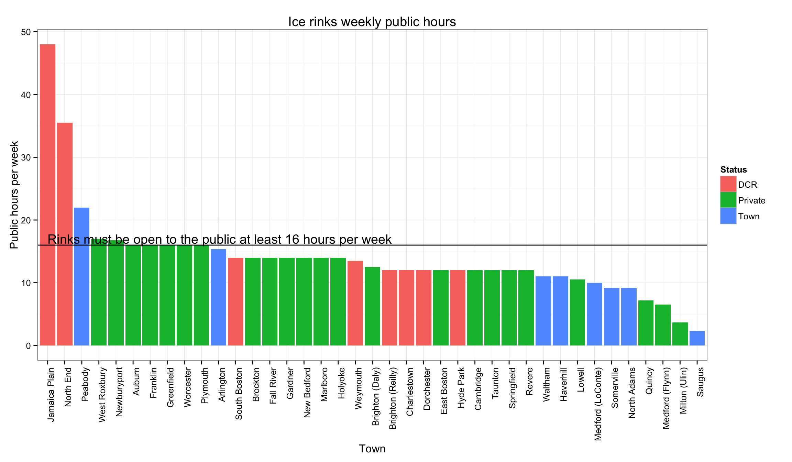

The following is an analysis of the ice rinks data.
A note on the format: each question is followed by the R code that generates the answer. This is also known as reproducible research, a practice that’s slowly being adopted by newspapers (e.g. 538, The Upshot). From wikipedia: “The term reproducible research refers to the idea that the ultimate product of academic research is the paper along with the full computational environment used to produce the results in the paper such as the code, data, etc. that can be used to reproduce the results and create new work based on the research.”
# Convert hours.each.week to hours
data <- icerinks %>%
select(Town,hours,Status) %>%
arrange(desc(hours))
# Order Town factor by hours
data$Town <- factor(data$Town, levels = data$Town[order(-data$hours)])
ggplot(data, aes(Town,hours,fill=Status)) +
theme_bw() +
geom_bar(stat='identity') +
geom_hline(yintercept=16) +
annotate("text", label = 'Rinks must be open to the public at least 16 hours per week', x = 1, y = 16.25, size = 5, hjust=0, vjust=0) +
ylab('Public hours per week') +
ggtitle('Ice rinks weekly public hours') +
theme(axis.text.x = element_text(angle = 90, hjust = 1))
# Export data
write.csv(data, '../output.csv')data <- icerinks %>%
group_by(Status == 'DCR') %>%
summarise(
count = n(),
mean.hours = mean(hours),
median.hours = median(hours)
)
knitr::kable(data)| Status == “DCR” | count | mean.hours | median.hours |
|---|---|---|---|
| FALSE | 31 | 12.51882 | 12.50 |
| TRUE | 8 | 19.87500 | 12.75 |